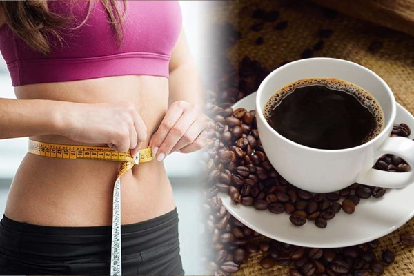
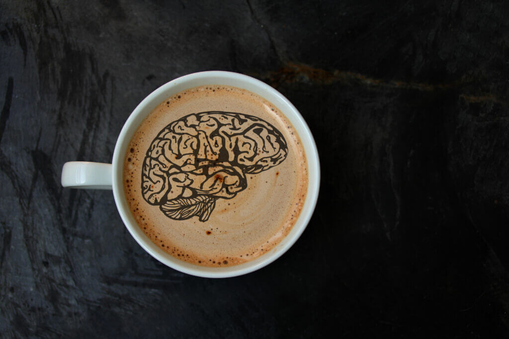

Los Beneficios Del Café
El café es una de uno de los productos más comercializados del mundo, siendo una de las bebidas más populares y consumida, junto al té y al agua. Esta bebida es bastante estimulante debido a su contenido en cafeína, una sustancia psicoactiva, estudios revelan que podrías estar obteniendo muchos beneficios al consumir esta bebida durante el día, no sólo por la cafeína, sino por todos las sustancias que contiene.
Puede ayudarte a perder peso
El café contiene magnesio y potasio, lo que ayuda al cuerpo humano a utilizar la insulina, regulando los niveles de azúcar en la sangre y reduciendo el deseo de comer dulces y bocadillos.Además ayuda a las células grasas a descomponer la grasa corporal y a utilizarla como combustible para el entrenamiento.
Estar alerta
Tomar café le ayuda a tu mente a estar concentrada y alerta a los sucesos de tu al rededor, mejorando tu agilidad mental. Tomar una taza de café una hora antes de entrenar te ayudará a rendir más en tus ejercicios, aumentando los niveles de adrenalina en tu sangre, la adrenalina es la hormona de «lucha o huida» de tu cuerpo que te ayuda a prepararte para el esfuerzo físico.
Previene enfermedades
Los estudios han demostrado que puede bajar los riesgos de una muerte prematura. Además puede disminuir el riesgo de desarrollar cáncer de próstata, y cáncer de endometrio. La cafeína también puede prevenir el desarrollo de cáncer de piel, previene los derrames cerebrales, la enfermedad de Parkinson, la diabetes tipo II,reduce el riesgo de padecer la enfermedad de Alzheimer. También reduce el riesgo de demencia, estimula el sistema nervioso central y aumenta el estado de ánimo.
Puede ser malo
Aunque el café resulte beneficioso para la salud, no debes exceder la dosis recomendada por los doctores, ya que su consumo excesivo puede traerte complicaciones para la salud, tales como acelerar tu corazon, dolor de cabeza, intoxicación, insomnio, afectar la salud de tu bebé, elevar el colesterol y causar enuresis en los niños, así que te recomendamos sólo tomar la dosis justa de café al día.